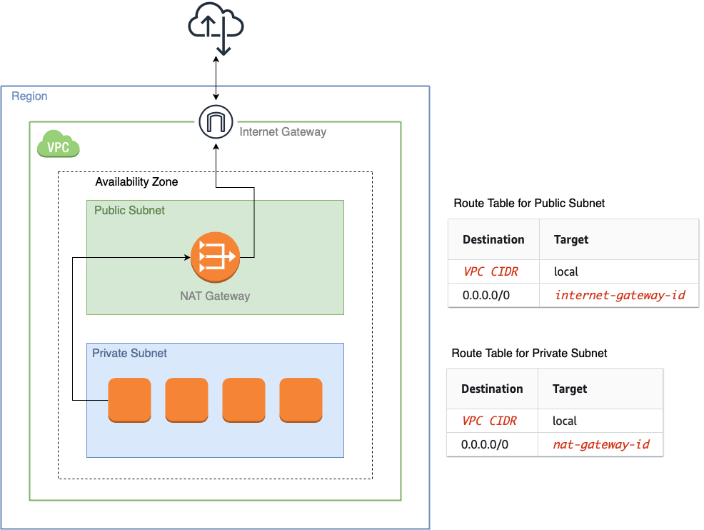

curiosity-notes
Posts
TIL
Books
AI Art
Disco Diffusion
Stable Diffusion
Projects
Apps
About
Subscribe to Posts
Subscribe to TIL
Subscribe to Projects
Categories
AI
AWS
Bash
Command Line
Data Science
Fastai
Git
IDE
Linux
Network
Python
VSCode
Zsh
TIL
Subtle Bug: Variable Shadows Function
Python
If we assign a variable with the same name as a function, even in a conditional statement, the function will be shadowed.
Ziyue Li
Apr 2, 2023
Get Function from Modules Using Its Name
Python
How to get the function defined in the current module using its name.
Ziyue Li
Jan 19, 2023
$() Command Substitution in Bash vs in Zsh
Command Line
Zsh
Bash
$() concatenates the results into one single line in bash, but not in zsh.
Ziyue Li
Jan 3, 2023
Append and Prepend Characters in Python f-Strings
Python
A tip to quickly append and/or prepend multiple characters in f-strings.
Ziyue Li
Dec 28, 2022
Fixing the “Unable to Resolve Your Shell Environment” Problem in VSCode
VSCode
IDE
Zsh
How to fix the
“unable to resolve your shell environment in a reasonable time”
problem in VSCode.
Ziyue Li
Dec 15, 2022
How to Get a List of Directories with Updated Files Since the Last Git Merge
Git
Linux
Using Linux commands to get a list of recently changed files and parse out the root directories.
Ziyue Li
Dec 12, 2022
Replace Certain Lines in a Script Using Fileinput
Python
How to replace certain lines and overwrite a text file using Python’s fileinput module.
Ziyue Li
Dec 6, 2022
How to Set Function as Methods
Python
How to set a function as bound method, class method and property.
Ziyue Li
Dec 4, 2022
Access Data in Installed Python Package
Python
How to access data files in installed python packages.
Ziyue Li
Nov 30, 2022

Access Internet from Private Subnet in VPC
AWS
Network
How to setup AWS VPC so we can access internet from the private subnet.
Ziyue Li
Nov 23, 2022
Infinite Recursion When Using
store_attr
and Overwriting
__getattr__
Python
Fastai
An infinite recursion when overwriting
__getattr__
while
store_attr
is used.
Ziyue Li
Nov 16, 2022
Show the Training Loop and CallBacks
Data Science
Python
AI
Fastai
An easy way to show the structure of the training loop and where callbacks are called in Fastai.
Ziyue Li
Nov 15, 2022
Pip Install from a Private Repo
Python
How to pip install from a private repo
Ziyue Li
Nov 6, 2022
No matching items